A paver patio's material choice does more to set its character than any furniture or decor placed on top of it afterward.
Brick, concrete, natural stone, and flagstone all read completely differently from one another, even in the exact same backyard layout.
These 10 ideas cover both the material options themselves and a few layout variations worth considering once a material actually gets chosen.

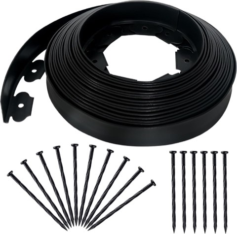
Quibbay No-Dig Landscape Edging Border, 2 Inch x 50 Ft, with 75 Anchoring Spikes
Shop on Amazon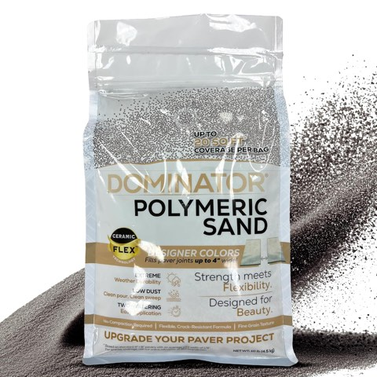
DOMINATOR Polymeric Sand with Ceramic Flex Technology, Charcoal Gray, 10 lb
Shop on Amazon1. A Small Patio for a Cozy Corner
A paver patio doesn't need to cover the whole backyard to be worth doing. A small, defined corner patio works just as well for a smaller space or a tighter budget.
This is a genuinely doable weekend-to-weeklong project, depending entirely on the material chosen for it.
A smaller footprint also makes it easier to justify a higher-end material, since noticeably less of it ends up needed overall.
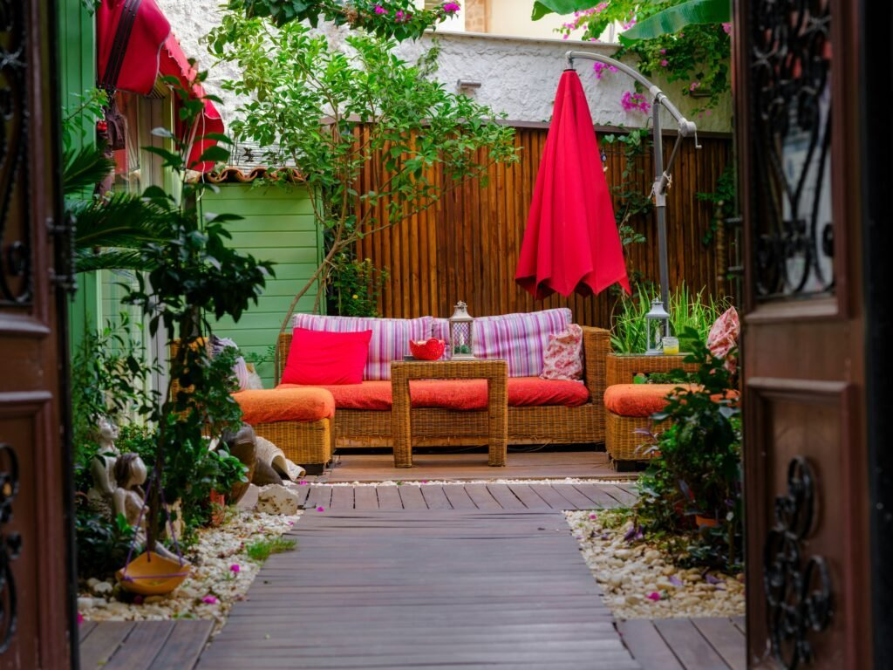
2. A Raised Section for Levels and Drama
A raised paver platform, even just a step or two up from the main patio, adds visual drama and a sense of architecture to an otherwise flat yard.
This works well for separating a dining area from a lounge area without needing a wall or fence to actually do it.
It's a more involved project than a flat patio overall, since it requires proper structural support underneath it.
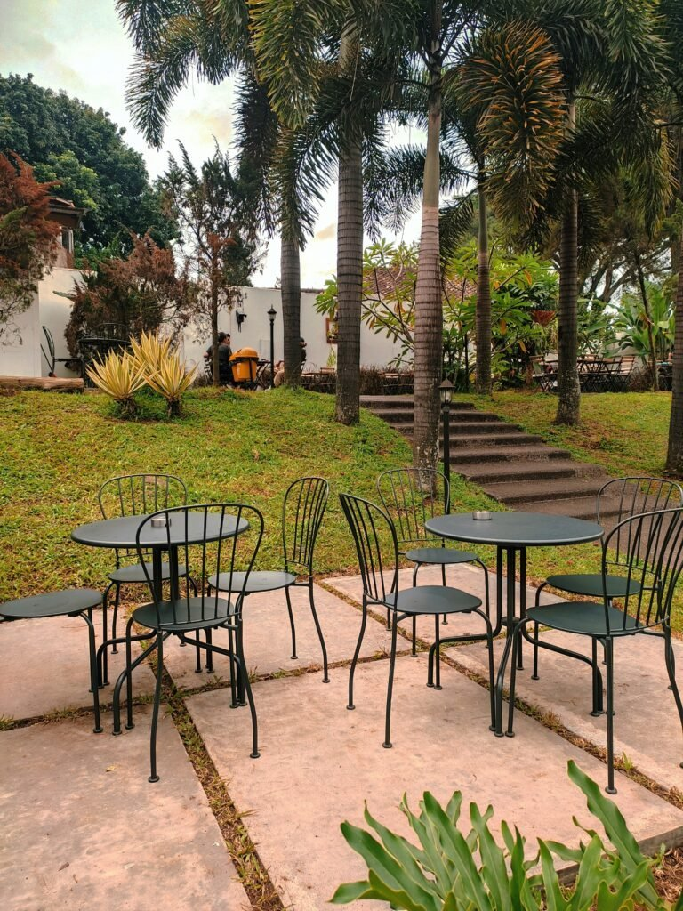
3. A Fire Pit Area for Year-Round Use
A dedicated paver section around a fire pit extends the patio's usefulness well into cooler months, not just the peak of summer.
Heat-resistant pavers matter more here than anywhere else on this list, given the direct exposure to an actual fire source.
This also naturally creates a defined gathering zone within a larger patio layout, which tends to be worth the extra planning.
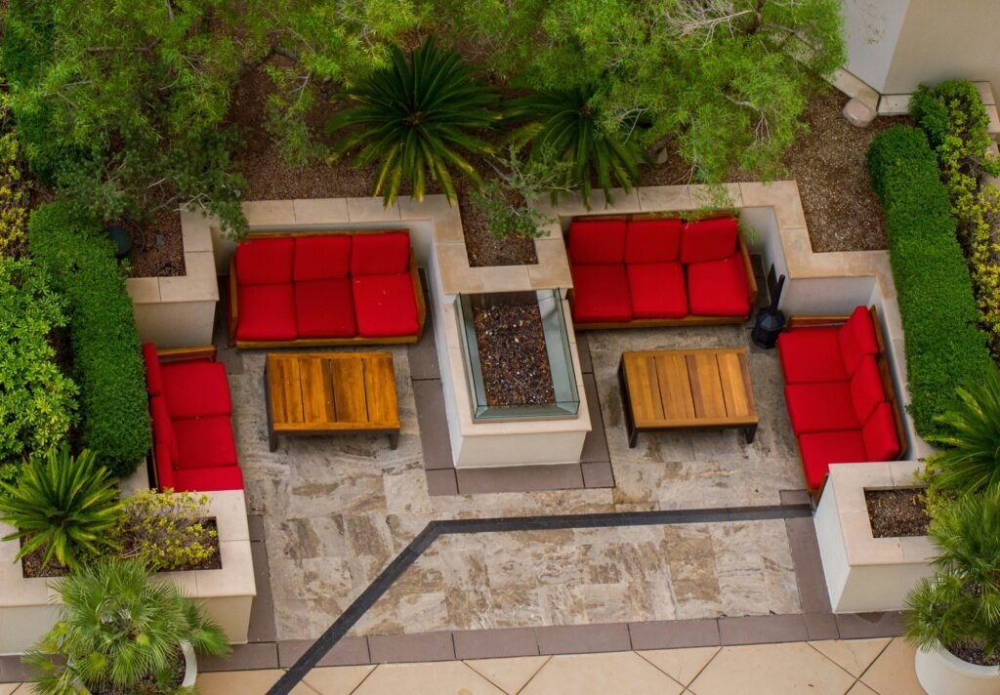
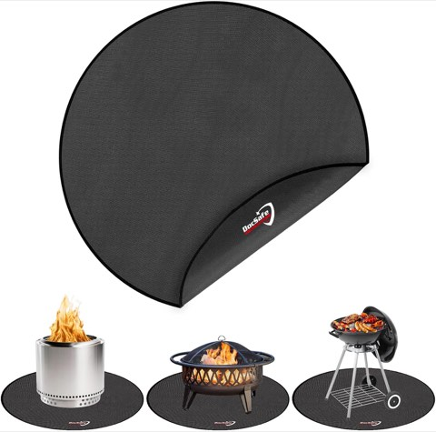
DocSafe 48 Inch Round Fire Pit Mat, 4-Layer Fireproof Heat Insulated Pad
Shop on Amazon4. Patterns and Designs Within One Material
Even a single paver material can look completely different depending on the laying pattern used, herringbone, basket-weave, running bond, or a circular medallion design.
This is one of the lowest-cost ways to add visual interest, since it changes the layout rather than the material itself.
A bolder pattern works well as a focal point on its own; a simple grid tends to recede and let furniture and plants take center stage instead.
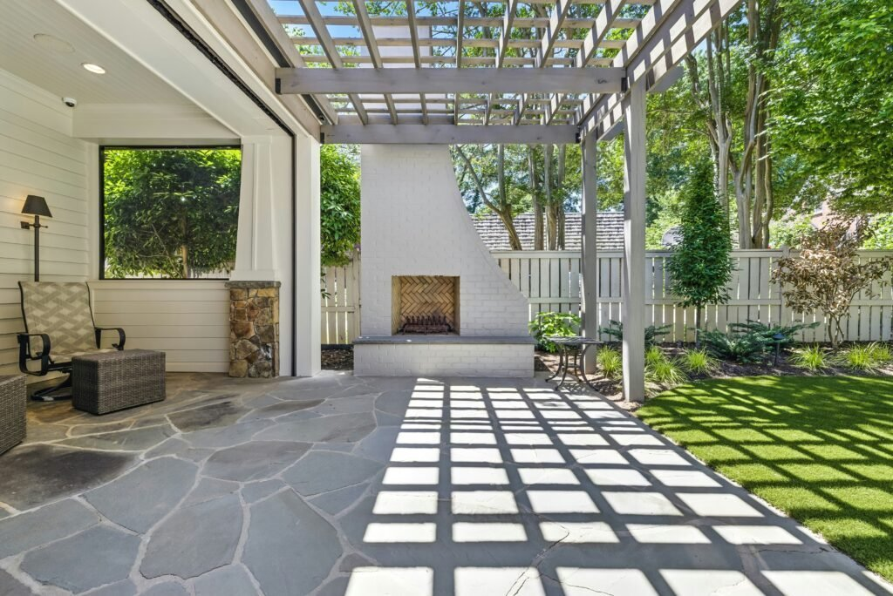
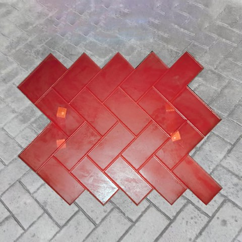
Herringbone Brick Concrete Stamp Mold with Handles for Textured Floors and Paths
Shop on Amazon
5. Mixed Materials for a Custom Look
Combining two materials, brick borders with a concrete field, or stone accents within a paver grid, creates a genuinely custom look no single material could achieve on its own.
This works well for defining different zones within one larger patio, like a dining area versus a lounge area sitting right next to it.
It's worth planning carefully before installation begins, since mixing materials after the fact turns into a much bigger project than it needs to be.
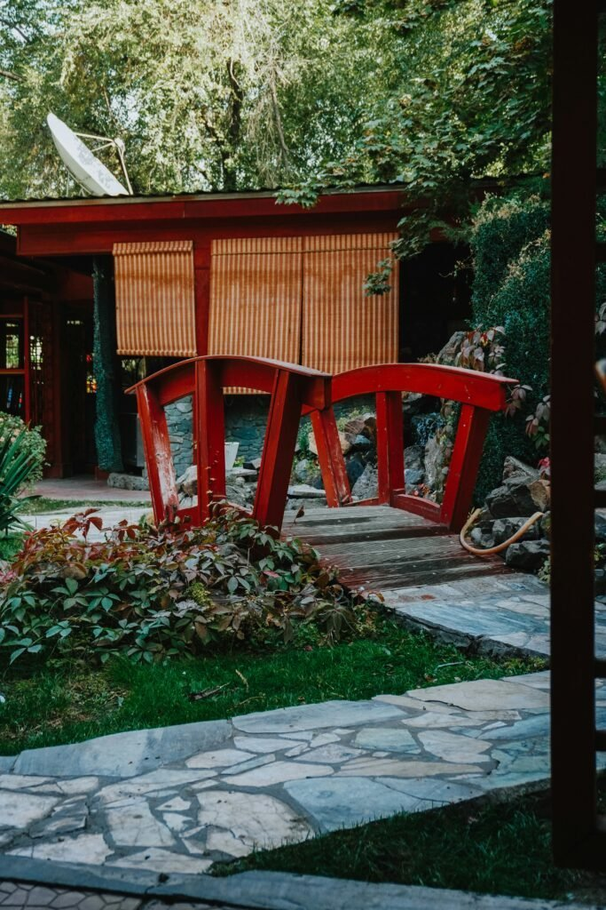
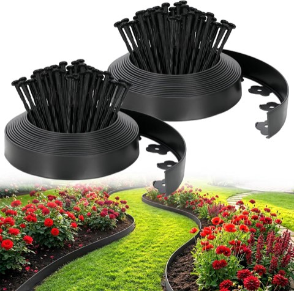
No-Dig Landscape Edging Garden Kit, 2 Inch x 66 Ft, with 100 Spikes, Heavy Duty
Shop on Amazon6. Flagstone for Organic, Irregular Shapes
Flagstone's irregular, puzzle-piece shapes create a far more organic, less rigid look than uniform rectangular pavers ever could.
This pairs especially well with a garden-adjacent patio, where the irregular edges can blend naturally into surrounding plantings nearby.
Fitting the pieces together takes more planning during installation, sure, but the payoff is a genuinely unique surface in the end.
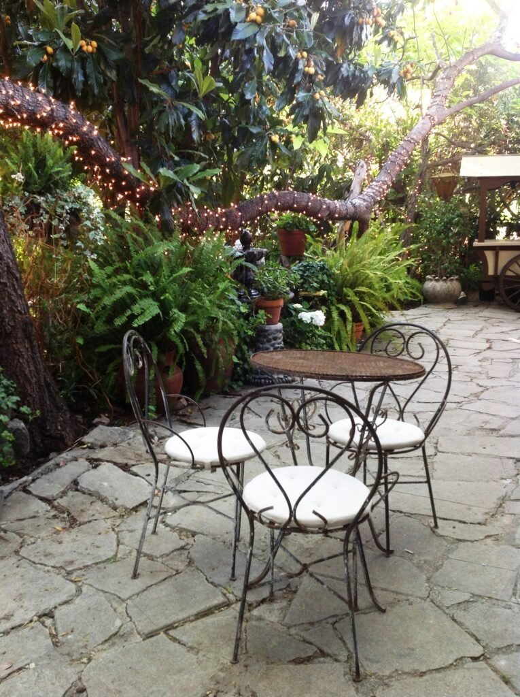
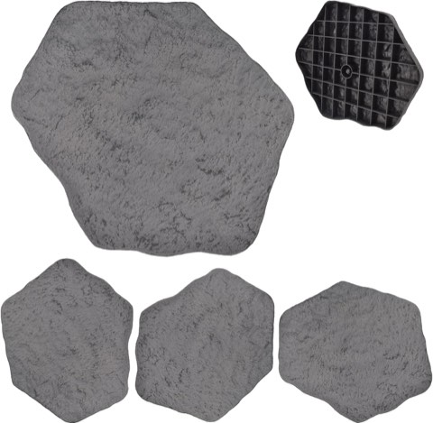
Arcadia Garden Products Fiberclay Stepping Stone Pavers, 16 x 17 Inch, Dark Gray, Set of 4
Shop on Amazon7. Natural Stone for an Elegant Finish
Natural stone, bluestone, travertine, slate, brings a genuinely elevated, high-end look that manufactured pavers simply can't fully match.
Each individual piece has its own natural color and texture variation, which gives the finished patio a one-of-a-kind quality no mass-produced material can replicate.
This is typically a higher-cost material overall, but one that tends to increase a home's outdoor value in return.
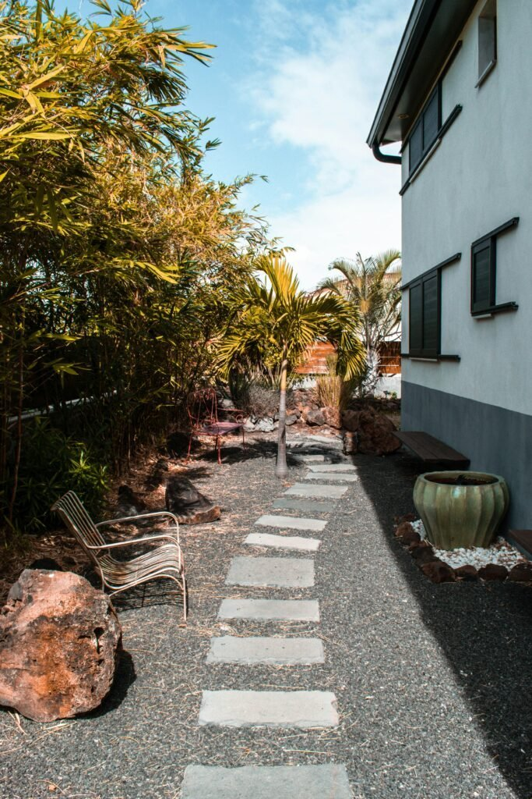
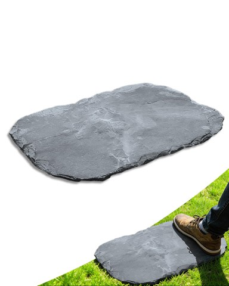
Natural Irregular Garden Stepping Stone, 12 x 16 Inch, Walkway Paving Stone
Shop on Amazon8. Cobblestone for a Storybook Feel
Cobblestone's rounded, irregular shape brings an old-world, storybook character that flat pavers simply can't replicate on their own.
This works especially well in a cottage, European-inspired, or garden-forward backyard style, where that character actually fits the rest of the setting.
The uneven surface is part of the charm, though it's worth considering carefully for anyone who genuinely needs a perfectly flat walking surface.
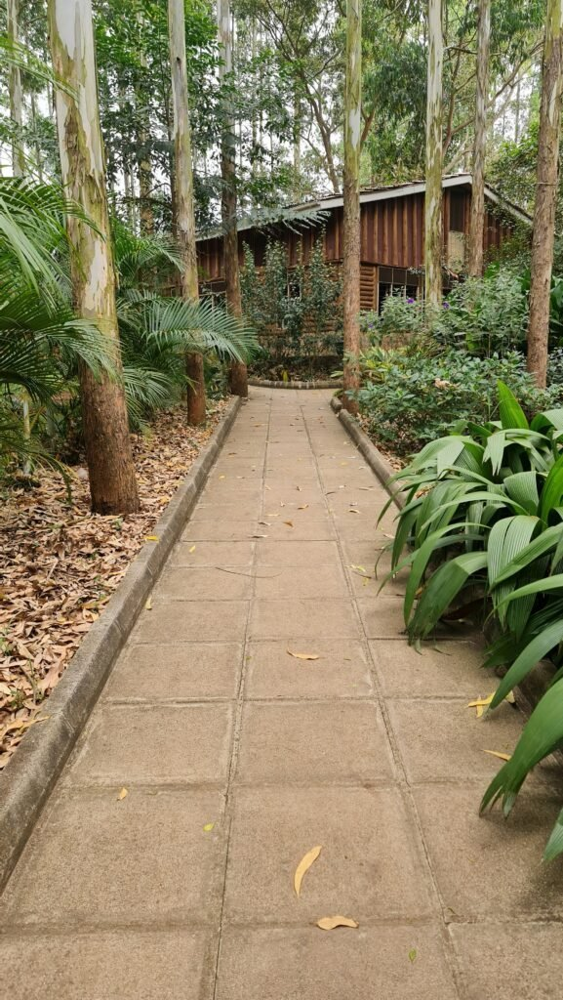
9. Concrete Pavers for a Modern Look
Clean-edged concrete pavers in a consistent gray or neutral tone give a patio a distinctly modern, minimal feel right away.
This is also one of the more budget-friendly paver materials available, which makes it a practical choice for a larger patio area in particular.
A simple grid layout reinforces the modern look here far better than an elaborate pattern ever would.
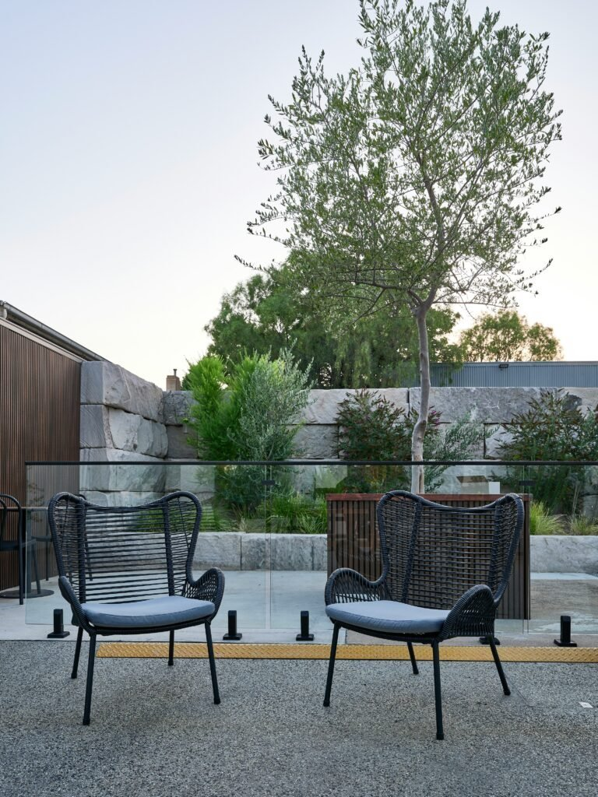
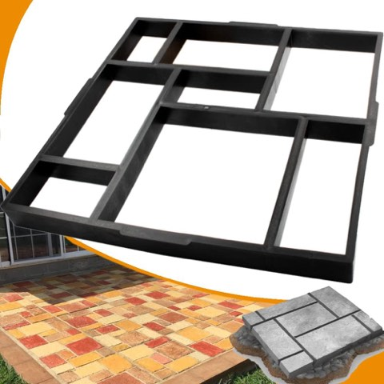
Avalution Reusable Concrete Walk Maker Stepping Stone Paver Mold, 20 x 20 Inch
Shop on Amazon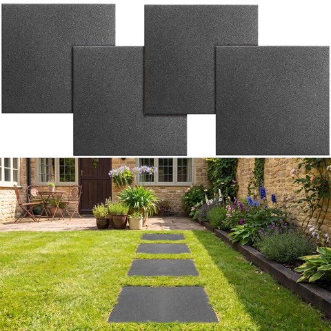
Nuanchu Rubber Stepping Stones, 12 x 12 Inch, 4 Pack, Non-Slip Garden Pavers
Shop on Amazon10. Brick for Classic Charm
Brick pavers bring a warm, traditional look that pairs naturally with almost any home style out there, from colonial to modern farmhouse.
This material also tends to age well over time, developing a slightly weathered character rather than looking dated the way some materials do.
A herringbone or basket-weave pattern adds genuine visual interest without needing a different material at all.
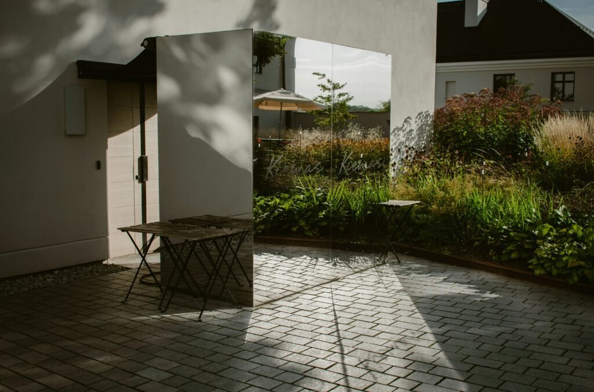
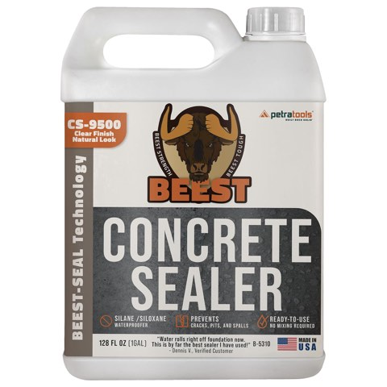
Penetrating Concrete and Paver Sealer, Ready to Use, 1 Gallon, Single Coat
Shop on Amazon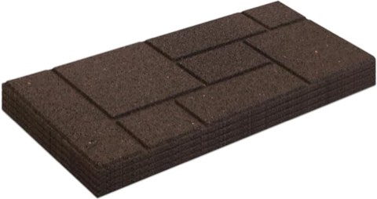
Tierra Verde Cobblestone-Look Rubber Stair Treads, 24 x 10 Inch, Brown, 4 Pack
Shop on AmazonYour Backyard, Your Style
None of these 10 material or layout choices is objectively correct over the others.
The right one really depends on the home's style, the available budget, and how the space will actually get used, dining, lounging, or just passing through on the way to somewhere else.
Whichever material ends up getting chosen, the patio becomes the backyard's foundation for everything else that gets added to it later on.